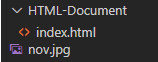

[HTML]  태그 사용법 & alt 속성 SEO
태그 사용법 & alt 속성 SEO
? Archive/WEB
2022-12-19 23:54:21
HTML 이미지<img> 태그는 이미지 파일을 HTML 문서에 출력해 주는 기능을 수행하는 태그입니다.
HTML img 속성 으로는 대표적으로 src, alt, width, height 가 존재합니다. 본 포스팅 에서는 이미지 태그의 사용방법과 이미지 태그의 기본적인 4가지 속성의 사용방법에 대해 소개하고 있습니다.
?List
1. HTML img 태그 사용 방법
1.1 src 속성
1.2 alt 속성
1.3 width, height 속성
? 개인적인 공부 내용을 기록하고자 하는 용도로 작성한 글 이며, 계속적으로 수정 및 추가해 나갈 예정입니다.
1. HTML img 태그 사용 방법
1.1 src 속성
img 태그의 src 속성에는 현재 이미지 파일이 존재하는 url을 적습니다.
url의 유형은 1.절대경로 2.상대경로 3.웹서버 주소 세가지로 구분됩니다.
1.절대경로 - 절대경로는 이미지 파일이 존재하는 파일의 주소를 처음부터 모두 적는 방식입니다.
<img src="images/nov.jpg"/>
2.상대경로 - 상대경로는 현재 HTML 문서의 위치를 기준으로 이미지 파일의 위치를 적어 주는 방식입니다.
상대경로로 이미지 파일을 지정해 줄 경우에는 다음과 같은 기호의 사용법을 숙지해 주셔야 합니다.
. : 현재 html 문서의 위치
.. : 현재 위치를 기준으로 상위 폴더
/ : 폴더 내부
예를들어 index.html (HTML문서)이 HTML-Document 폴더 내부에 들어있고, nov.jpg 파일은 HTML-Document 폴더와 같은 공간에 존재한다고 가정하면, 다음과 같이 경로를 지정해 주시면 됩니다.
<img src="../nov.jpg"/>
3.웹서버 주소 - 웹서버 주소는 말 그대로 웹 서버에 존재하는 이미지 파일의 경로를 그대로 복사해 넣어주는 방식입니다.
예를 들어 구글 웹사이트 이미지의 주소를 알고 싶다면, 구글 이미지에서 우클릭을 하신 뒤, 이미지 주소 복사를 누르시고 src 속성에 명시해 주면 됩니다.
단, 웹서버 주소 방식을 사용하는 경우 저작권에 위배되지 않는 이미지 인지 정확하게 확인해야만 합니다.
1.2 alt 속성
alt 속성에는 이미지가 웹서버가 어떠한 장애로 인하여 출력되지 않는 경우를 대비하여 대신 출력 될 텍스트를 적습니다.
alt 속성은 img 태그의 필수 속성은 아니지만 반드시 작성해 주는 것이 좋습니다.
alt 속성을 명시 해야만 하는 이유는 다음과 같습니다.
1. alt 속성을 이용하여 설명을 작성해 주지 않으면, SEO 엔진이 이미지에 대한 정보를 식별할 수 없기에 페이지 노출에 불리합니다.
2. 시각장애인과 같은 사회적 약자를 배려하기 위한 차원에서도 중요합니다. 사회적 약자 분들은 alt 속성을 이용해 페이지의 정보를 식별합니다.
<img src="images/nov.jpg" alt="테스트 이미지"/>
1.3 width, height 속성
width, height 속성을 속성의 이름에서 유추할 수 있듯이, 이미지의 크기를 조정하는 기능을 수행합니다.
width 속성은 이미지의 가로 사이즈를 height 속성은 이미지의 세로 사이즈를 조절합니다.
width, height 속성을 이용해 따로 이미지의 크기를 지정해 주지 않으면, 본래 이미지의 크기가 그대로 출력됩니다.
<img src="images/nov.jpg" alt="테스트 이미지" width="650" height="440"/>